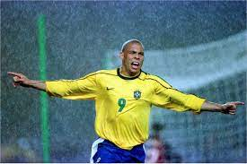

호나우두 루이스 나자리우 데 리마(브라질 포르투갈어: 1976년 9월 18일,[2] 히우 지 자네이루 ~)는 흔히 호나우두(Ronaldo)로 알려진 은퇴한 브라질의 프로 축구 선수로, 현역 시절 공격수로 활약했다. 현재 레알 바야돌리드의 구단주이다. 흔히 "경이로운 자" 라는 별칭으로 수식되는 그는 역사상 최고의 공격수 중 한 명으로 손꼽힌다.[3][4][5][6][7] 1990년대, 그의 기량이 물에 올랐을 적에는 빠른 속도로 공을 몰 수 있었고, 기교와 깔끔한 마무리에 능했다.
호나우두는 신체적으로 물이 올랐던 1990년대에 크루제이루, PSV, 바르셀로나, 그리고 인테르나치오날레 등의 1류 구단들을 거쳤다. 그는 스페인과 이탈리아를 오고가며 디에고 마라도나가 세운 역대 최고 이적료 기록을 21살이 되기 전에 두 번 깼다. 23세가 되었을 때, 그는 구단과 국가대표팀 일원으로 활약하며 200번 넘게 골망을 갈랐다. 무릎 중상과 재활로 거의 3년을 제대로 활동하지 못했던 호나우두는 2002년에 레알 마드리드에 합류했고, 이후 밀란과 코린치앙스에 잠시 머물렀다.
호나우두는 1996년, 1997년, 2002년에 세 차례 FIFA 올해의 선수로 선정되었고, 1997년과 2002년에 발롱도르도 두 차례 받았으며, 1998년에는 UEFA 올해의 클럽 축구 선수로도 선정되었다. 그는 1997년에 라 리가 최우수 외국인 선수로 선정되었고, 같은 해에 라 리가에서 34골을 기록해 유러피언 골든슈를 받았고, 1998년에는 세리에 A 올해의 외국인 선수로 선정되었다. 2004년, 그는 펠레의 선정에 따라 세계 최고 축구인의 목록인 FIFA 100에 이름이 올랐고, 브라질 축구 박물관 명예의 전당과 이탈리아 축구 명예의 전당에도 이름을 남겼다.
호나우두는 브라질 국가대표로 98경기에 출전해 62골을 넣어 펠레에 이어 자국 대표팀 최다 득점 2위에 이름을 올렸다. 호나우두는 17세의 나이에 1994년 FIFA 월드컵에 참가해 우승을 거둔 선수단의 최연소 선수였다. 1998년 FIFA 월드컵에서는 프랑스전 대패 몇 시간 전에 발작으로 앓았지만 브라질을 결승전까지 올린 공로로 골든 볼의 주인공이 되었다. 그는 2002년 대회에 또다시 FIFA 월드컵 정상에 올랐는데, 그는 호나우지뉴와 히바우두와 함께 최전방의 3인방으로 나란히 섰다. 호나우두는 결승전에서 2골을 기록해 대회 득점왕으로 골든 슈를 받았다. 2006년 FIFA 월드컵에서 15번째 FIFA 월드컵 골을 기록해 당시 통산 최다 FIFA 월드컵 골 기록을 세웠다.
또 다시 몇 차례 부상을 당한 호나우두는 2011년에 프로 무대에서 은퇴를 선언했다. 은퇴 후, 그는 2000년에 임명되었던 지위인 유엔 개발 계획 친선 홍보대사로 계속 근무했다. 그는 2014년 FIFA 월드컵 홍보 대사로도 역임했다.